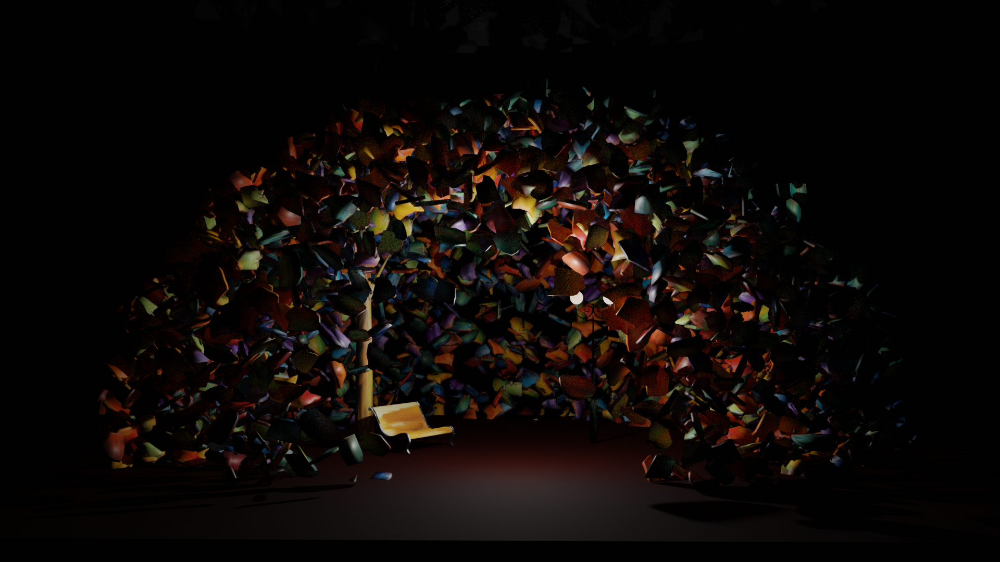

3D environment inspired by a painting
During my degree, I explored how different worlds could be created and published in Mozilla Hubs to enable people to virtually come together or even to escape from the real world into a virtual space for a while. I thought about what world I would love to explore and where I could imagine spending my time to escape the real world for a bit. Paintings by Leonid Afremov came to mind. They create a relaxing and peaceful atmosphere and their vibrant colours invite for further exploration. I picked the painting “Rain’s Rustle in the Park” (source) to recreate in 3D. I started by modelling some of the objects in the scene and painting them using Blender. An important part of the painting are the brush strokes that seem randomly placed along the top and sides of the painting. I realised those in 3D by cutting out pieces of the image, giving them a 3d mesh and then placing them on a globe around the scene. I placed 3000 brush stroke objects in total, using the particle system in Blender. I also imported the model in hubs and created a room: Hubs Scene